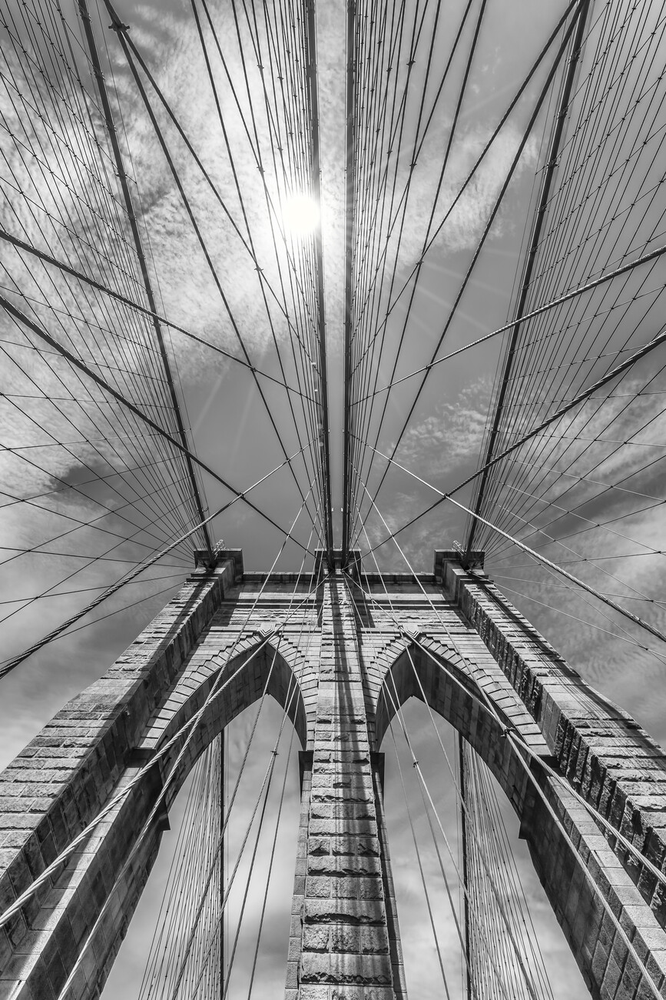
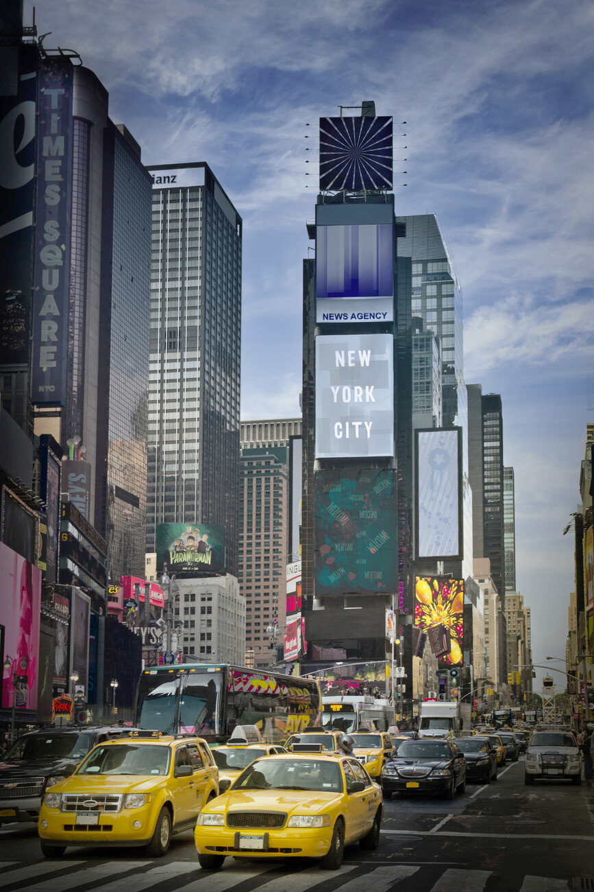
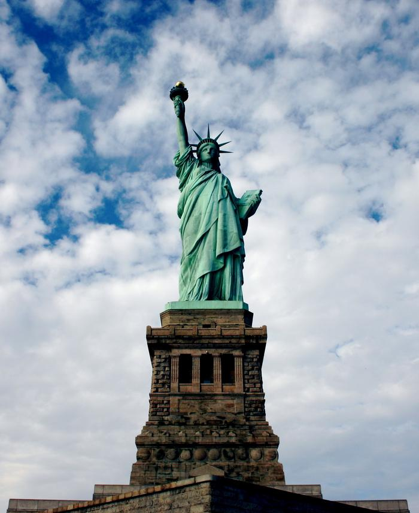
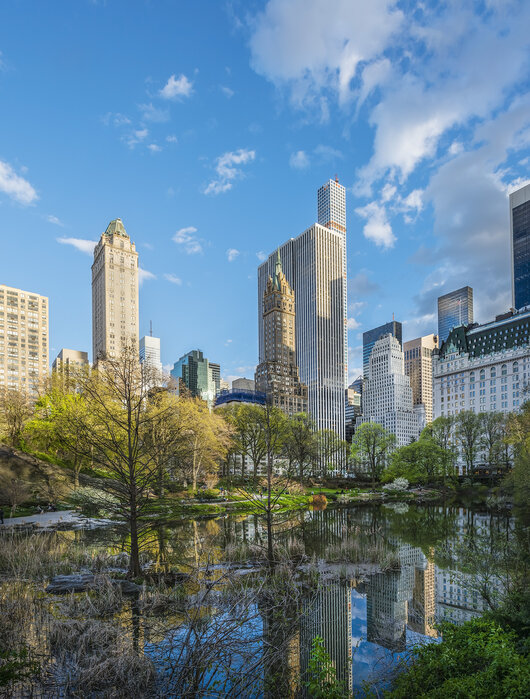

Miejsca do odwiedzenia
Most Brookliński
Jeden z najstarszych mostów wiszących na świecie o długości 1834 m (przęsło główne znajdujące się nad wodą ma długość 486 m), szerokości 26 m i wysokości 84 m. Łączy nowojorskie dzielnice Brooklyn i Manhattan, które oddziela od siebie East River. W chwili zakończenia budowy w 1883 r. był jednym z największych stalowych mostów wiszących na świecie.Most Brookliński jest zaliczany do najsłynniejszych obiektów Nowego Jorku; jest znany m.in. z wielu filmów Hollywood.
Czytaj więcejTimes Square
Plac w dzielnicy Midtown w okręgu Manhattan w Nowym Jorku znajdujący się na skrzyżowaniu Broadwayu i alei Siódmej, rozciągający się od ulicy 42 do ulicy 47. Jest to jedna z ikon Nowego Jorku[potrzebny przypis]. Słynie z wielkiej liczby reklam świetlnych.
Czytaj wiecejStatua Wolności
Posąg na wyspie Liberty Island u ujścia rzeki Hudson do Oceanu Atlantyckiego w regionie metropolitalnym Nowego Jorku, nieoficjalny symbol wolności, Nowego Jorku i Stanów Zjednoczonych. Wyspa Liberty wraz z wyspą Ellis stanowi kompleks będący własnością federalną i zarządzany przez National Park Service. Administracyjnie należy do stanu Nowy Jork.
Czytaj więcejCentral Park
Park miejski w Nowym Jorku będący oazą zieleni. Położony w centrum Manhattanu, między 110. ulicą (Central Park North) na północy i 59. ulicą (Central Park South) na południu oraz Ósmą Aleją (Central Park West) na zachodzie i Piątą Aleją na wschodzie. Zajmuje 843 akry powierzchni (341 hektarów) będąc prostokątem o szerokości 850 m (w kierunku wschód-zachód) i długości 4120 metrów (północ-południe).
Czytaj wiecej